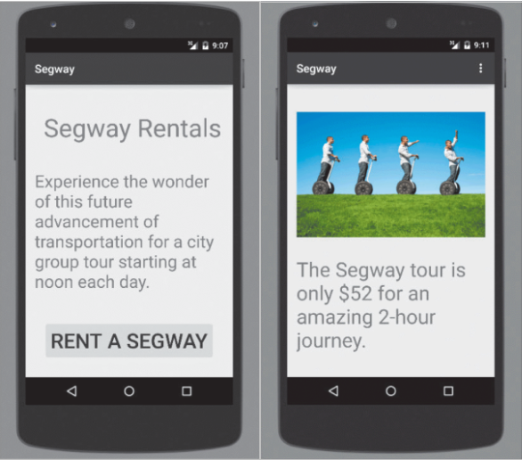

Lab 4 Android User Interface. Part 2
For the exercises below, follow the steps in the Bruschetta example from Lab 3).
Download images for Task 1 and 2 from here -> Pictures Lab 4
1. Youth Hostel App
| Application Title | Youth Hostel App |
|---|---|
| Purpose | In a youth hostel reservation app, a hostel is selected and an address and other information is displayed |
| Algorithm 1: | The opening screen displays the name of a hostel, an image (provided in the Pictures folder at top of workbook), and a Button control. Research a real name of a hostel and address and cost range to display in your own customized app (do not use the one in the figure below!) |
| Algorithm 2: | When the user selects a hostel, an address and a cost range are displayed in a second screen. |

2. Segway Rental App
| Application Title | Segway Rental App |
|---|---|
| Purpose | In this app, a Segway tour is selected and a Segway image is displayed with rental information |
| Algorithm 1: | The opening screen displays the title of the app, a description and a Button control. |
| Algorithm 2: | When the user chooses to rent a Segway, an image (provided in the Pictures folder at top of workbook) displaying the Segway and tour price is shown. |

3. Business Card App
| Application Title | Business Card App |
|---|---|
| Purpose | This app provides your business card information with your own picture. Create two screens for the business card app. You use the app to select the name of a business contact, and then display detailed business card information |
| Algorithm 1: | The opening screen displays the name of the contact, your picture converted to a .png file, and a Button control. Create your own layout. You can find royalty-freee images here: https://www.freeimages.com/ |
| Algorithm 2: | The second screen displays your business card information. Create your own layout. |